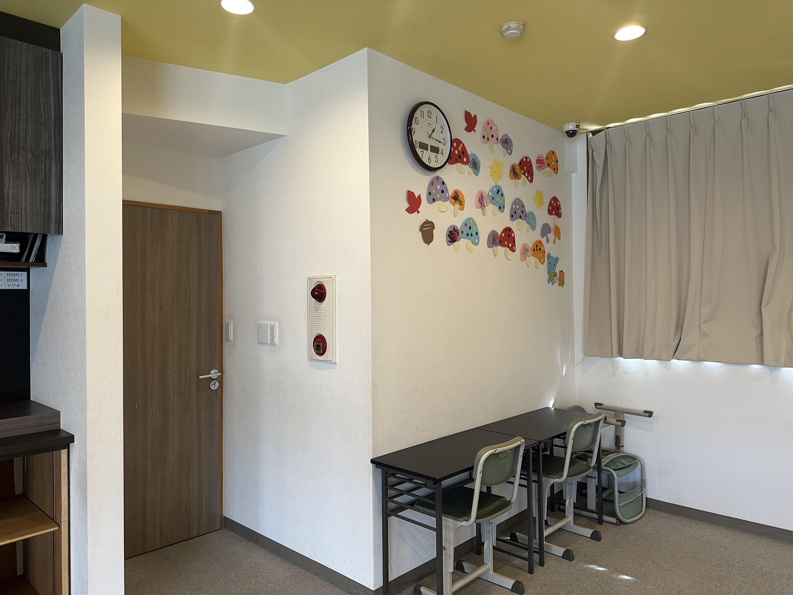
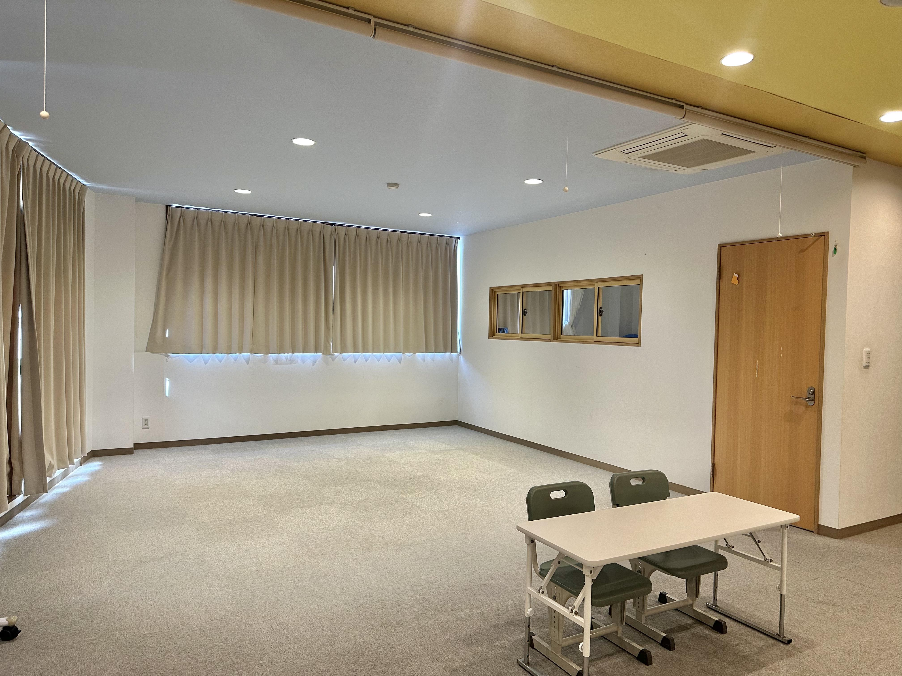
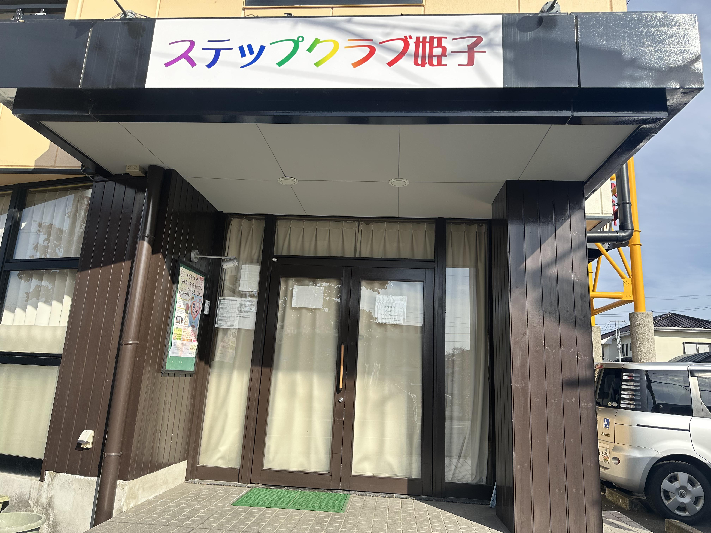

- 事業所理念
- 「一歩一歩、成長する階段を登るように」子供たちが将来、社会生活において、充実した毎日を過ごせるよう、様々な活動を通して、必要な力を身に着け、生きる力を育てる支援を目指しています。
☆特徴
小学生・中学生向け
机の活動、運動等を通じ、「意思表現」「順番を守り譲り合う」「役割分担」「目標に向かってお友達と協力する」等、集団の中で他者と上手に関わることを支援します。
中学生・高校生向け
将来を見据え「就労」「職業訓練」を意識した活動、支援が中心になります。
☆支援プログラム
健康・生活：
日々の関わりの中で、情緒の安定を図るための支援を行います。活動を通して基本的生活習慣を身につけられるよう支援します。
運動・感覚：
子ども達が楽しめる活動を提供し、その中で、身体の使い方を学び、様々な感覚を十分活用できるように支援します。
認知・行動：
様々な感覚を活用し、認知機能の発達を促します。また、1人1人の特性に配慮し、こだわりや、適切行動への対応の支援を行います。
言語・コミュニケーション：
1人1人に応じた関わりを大切にしています。発声、身振り、言葉等の様々なコミュニケーション手段を活用し、自分の思いを伝えられるよう支援します。
☆活動内容
ステップクラブ姫子は、手指を使った活動や体を大きく使った運動などを中心に個別・集団での支援を行っています。 また、公園での外遊び、季節の活動（自然とのふれ合いやプランターで野菜作り）、長期休暇中のイベント （調理実習、クリスマス会、水遊び、買い物学習 etc...）など、アットホームな環境で、子供たちそれぞれのペースで楽しく学びながら成長していくお手伝いをさせて頂きます。子供たちにとって楽しい場所であり続けることを心がけています。
☆施設紹介
・対象児
発達に心配のあるお子さま
小学1年生～高校3年生
・定員
1日10名

・営業日
月曜日～金曜日
午前11時～午後6時
土曜日・長期休暇
午前9時～午後5時
・休業日
日曜日・祝日・お盆・年末年始

・費用
受給者証記載の負担額まで
おやつ希望の場合 1日100円
給食希望の場合 1食450円
・送迎サービス致します。
